Movie review by : Metatron
Year : 1979
Directed by : Ridley Scott
Written by : Dan O'Bannon & Ronald Shusett
Degree of Cyberpunk visuals : Very High
Correlation to Cyberpunk themes : Medium
Rating : 10/10
Key cast members :
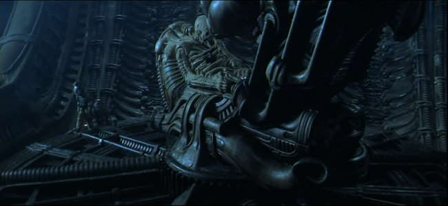
"WHAT'S THE STORY, MOTHER?" Back in 1979, something happened. A momentous event took place, one that would redefine things for years to come, its effects still lingering after all those years. Yet it is neither the none-too-peaceful Soviet meddling in Afghanistan nor the defiant revolt of Iran's ayatollahs I'm referring to. Something else. A dark vision, a glimpse into the distant void of space. Where no one can hear you scream.
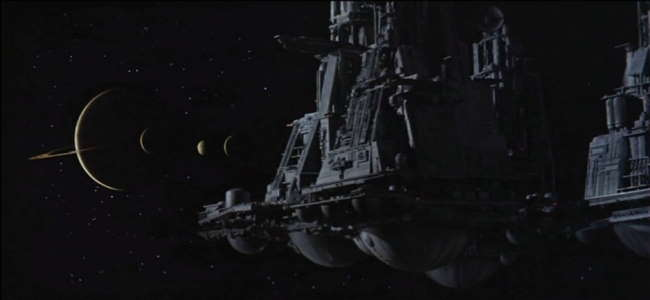
Sure no one could hear ME scream, as it would still be a couple of years before that other great moment in history- the birth of yours truly- but many others sure did when they first saw Ridley Scott's masterpiece in all its big-screen glory. Must have been one hell of a ride. Another thing I've missed then... When I got acquainted with the said macabre flick, it was on a puny twenty-something inch screen and after having seen a multitude of more technologically advanced films. Nevermind. It still blew me away with the force of a 20-megaton nuclear charge. It was something new. An awakening, almost. Don't ask me how life looked like before Alien. I can't remember.
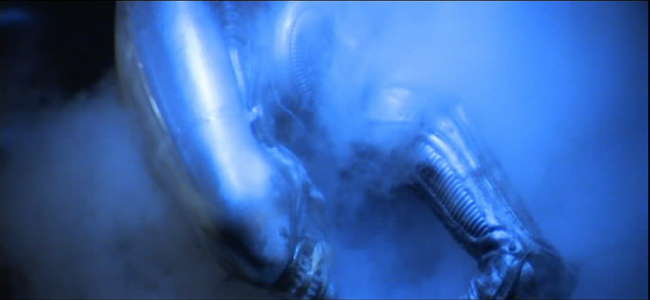
NOT OUR SYSTEM: Okay, so far so good, but there is just one tiny thing. Alien, as the name suggests, is about extraterrestial life. Not of the kind that whooshes past in gaudy flying saucers and abducts cheerleaders, but still very much not of this world. If you think cyberpunk, you obviously think implants, h4x0ring, electric sheep, that sort of thing. Surely a film about a black insect-like monstrosity eviscerating a bunch of interstellar cargo haulers does not fit in here? Well, at the risk of being summarily executed for heresy, I'll say: yes it does. And, before you get that burning stake ready, I'll tell you why...
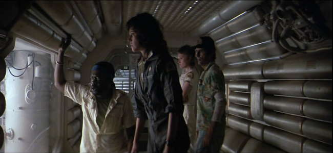
CREW EXPENDABLE: Distant future. USCSS Nostromo, a commercial spacecraft with a gargantuan ore-processing refinery in tow, its 7-man crew in deep hypersleep, encounters an unchartered backyard world from which a mysterious distress signal emanates. Mother, the ships' computer mainframe, awakens the dreamers- Colonel Ellen T. Ripley among them- to investigate the cryptic transmission, as it is unlikely that its source is anything known to mankind... After landing on the planet's precambrian surface, the crew discovers a derelict spacecraft... hey, you presumably know all that already anyway! Besides, for those lucky few who are still to live through the cathartic shock that is Alien, I shall try to keep spoilers to a bare minimum. Suffice it to say that they pick SOMETHING up on their unscheduled trip- and this something is just about as friendly to other organic life as H5N1 virus. Only slightly bigger. Needless to say, Colonel Ripley certainly won't have any good memories from this particular flight...
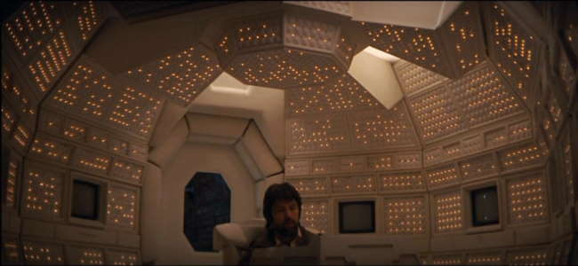
DOES NOT COMPUTE: Now the heretical part. I, regardless of how controversial a view that is, will argue that the original Alien is- you ready for this?- a cyberpunk film. True, it is not PURE cyberpunk in the way the Matrix or Ghost in the Shell are. But then again the vast majority of films reviewed here require some argument as to their cyberpunk credentials. A film does need to have ALL the relevant cyber themes either. Blade Runner and Terminator have no cyberspace, the Matrix has no androids and so forth. Same goes for the visual side. Admittedly, Alien is an uncommon hybrid, a fusion between horror and dark, cyberpunk sci-fi. But this only makes things more interesting.
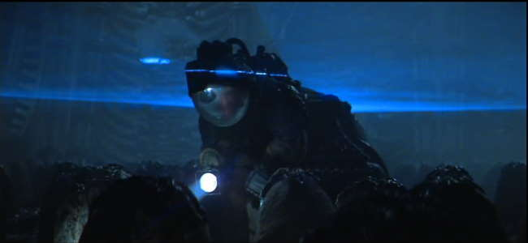
For a start, one needs to mention the existence of a shadowy entity that lurks in the background of the events in Alien (and two of its sequels)- Weyland-Yutani, a dark corporate monolith whose invisible, intangible hand guides many of the events that take place on the Nostromo and beyond. Admittedly, corporate control here is not organized in an oppressive, Orwellian kind of way. Few however would argue that its ruthless actions, removed from any ethical constraints, are any less disturbing. This fictional conglomerate is in fact not far removed from some modern-day corporations that cast aside moral and legal limitations to get what they want. Illegal deals, corruption at the highest level, worker exploitation, illegal drug trials, cover-ups- been watching the news anytime lately? Weyland-Yutani is merely the next step in evolution- a latter-day Wal-Mart, some may say. Not only willing to sacrifice Nostromo's crew members, it is also quite fine with having its dirty work overseen by a cynical and efficient android, whose cybernetic identity only becomes apparent when a few parts come off...
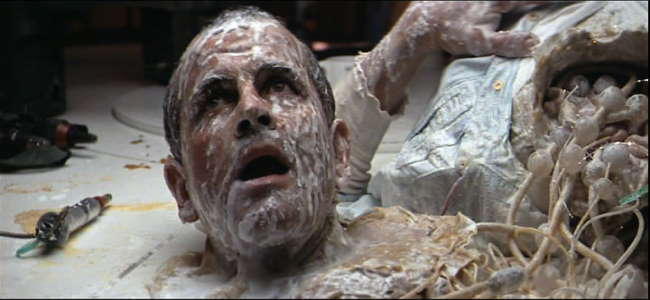
"A GODDAMN ROBOT!": The inclusion of androids in the Alien series is another overarching cyberpunk theme. The first film does not explore the deeper implications of artificial life as much as the sequels do, but it's still there. Here, the "artificial person" functions mostly as an extension of Weyland-Yutani's almost limitless influence, a secretive overseer of affairs who closely follows implanted orders. But the subsequent films will explore this theme further. Rather than merely performing more identity tricks, androids take on a distinct societal role. One might quite correctly remember Bishop and Call, the other synthetics in the series, for their outstandingly vivid humanity, contradicted only by the milky white of their ersatz blood. Yet for all their moral qualities these sentient beings are condemned to an inferior- almost slave-like- role in society. And yet- for now- they accept that role with resignation, tolerating their place in the scheme of things. A programmed limitation? Hardly likely. Given their immensely strong self-awareness, one may imagine how challenging and unfair is it for an entity so humane to accept being treated as nothing more than a piece of property- so much so that Call in Alien Resurrection will at one point voice her defiance and disgust against what she was made to be. By way of comparison, in the first Terminator film the most sophisticated words uttered by our favourite mechanoid executioner are "fuck you, asshole". See the difference?
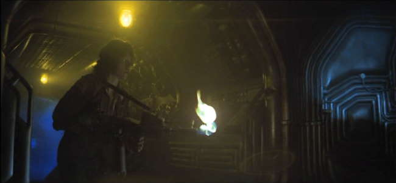
NO FURTHER ENHANCEMENT: The next important bit -the visuals. Powerful, provocative, and atmospheric, they exhibit the studied, gritty realism that has become the calling card of the series. In stark contrast to idealistic visions of the future often seen in other sci-fi films, Alien has gone down a totally different route, one that would later come do be associated with the cyberpunk genre. Case in point- the Nostromo, a far cry from sleek interstellar vessels of old. As it majestically looms into view at the beginning of the film, a mechanical cathedral emerging from the pitch black void, one can see that the film follows an entirely different canon of aesthetics. The ship is monumental, imposing through its sheer mass, intentionally unpretty. Similar approach carries on within, as we explore the craft's unwelcoming, functional interior of labyrinthine complexity, its dimly lit, grimy corridors filled with snaking wires and exposed machinery. The crew quarters, while cleaner and more organized, seem no less depressing, exhibiting a cold, clinical look reminiscent of vintage computers. Every now and then, the screens will light up with sharply rendered readouts as the mainframes reawaken with eerie electronic chatter. As there was no CGI to fall back against, the only way to create the Nostromo's vivid interiors was to painstakingly construct the whole set, which gives it a spectacularly tangible quality seldom seen nowadays. And one can almost feel the filmmakers pride, as the camera moves, unhurried, through these cold, industrial catacombs, studying the complex surfaces, celebrating their utilitarian crudity. Along with Blade Runner, this film has defined the core cyberpunk visual reference point for years to come.
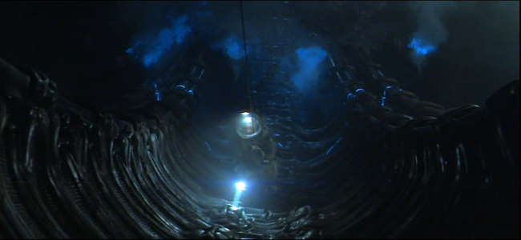
The Nostromo, however, does feel rather cozy next to the primordial desert in which it landed, a dark moonscape filled with surreal forms of bare rock. And it appears positively Arcadian compared to the infamous derelict ship, a bizarre structure, part mechanical, part organic, an otherworldly nightmare. Welcome to the dreamworld of H.R. Giger...
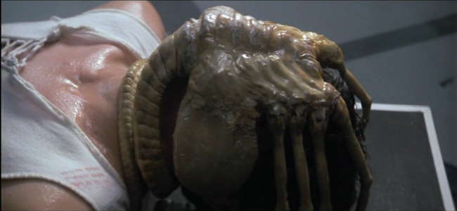
PERFECT ORGANISM: Often imitated and never bettered, Giger is a master of the grotesque. It is his wonderfully twisted mind that has spawned what is probably the greatest creature designs ever. Yet the Xenomorph is only one of Giger's many dark, disturbing visions- many of which have caused outbreaks of controversy due to their blatant, twisted eroticism. Indeed, much of the Alien's looks and life cycle can be seen as a perverse sexual metaphor. Yet Giger's art is first and foremost a study of a peculiar symbiosis between man and machine, an often perverse fusion of the robotic and the organic. Next to his biomechanical mutations, most depiction of cyborg flesh appear staid and conservative. Some theories about the Xenomorph itself in fact suggest that its obscene, insectoid form was not a result of evolution, but deliberate design, the entire species intended for use as the ultimate bioweapon by a mysterious extraterrestrial race to which the forsaken spacecraft belonged. In that respect, it seems to blur the line between biological and artificial life, being something of an organic killing machine. And, it has to be added, a pretty effective one at that.
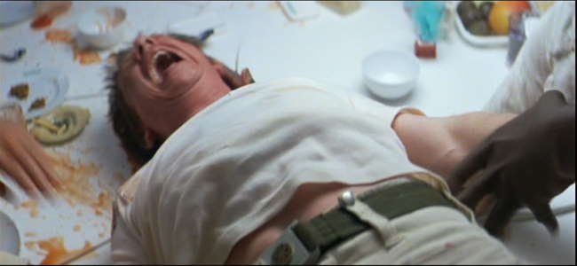
HEAR THEM SCREAM: The sound effects complete the package. From the moody, unmistakable musical score by Jerry Goldsmith to the sonic assault that we are treated to in the final sequences, as self-destruct alerts moan mournfully and explosions fill the air, this is a true masterpiece. The sound effects also have definite cyberpunk traits- the strange bleeps and machine chatter generated by the ship's electronics are one of the best I've ever heard. And the Alien shrieks are almost music to my ears...
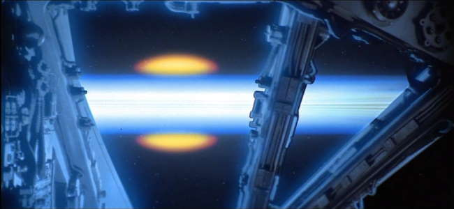
SIGNING OFF: Ripley's confrontation with the Alien would not, of course, be the last. Three sequels have followed, each surprisingly managing to explore new themes, many of which have strong relations to the cyberpunk movement as well. Rumours of a fifth installment still linger, even though the outstanding flop that is AVP has cooled some of the enthusiasm down, and Weaver, whose evolution from a scared little girl into a seasoned Xenomorph slayer was one of the major aspects of the film, has denied involvement. We shall see. Whatever its future may be, the Alien franchise has often been seen as sitting uneasily among the more obvious cyberpunk films. Being a hybrid, it was bound be frowned upon by the purists. Yet the mere fact that it involved some non-cyber themes made many ignore the fact that it had loads of thematic links to the genre, plus its visual side is arguably closer to the orthodox cyberpunk ideal than Equilibrium, Casshern and Dark City taken together. And that it was made by the very same man who brought us a certain film involving runaway replicants. In fact the series came painfully close to gaining a sort of blessing from William Gibson himself, who has produced the original script for the third Alien film- one that, for some bizarre reason, got rejected. If it succeeded, the perception of the franchise in terms of its cyberpunk credibility might have been very different indeed.
And now if you excuse me, I'm off for a heresy trial...